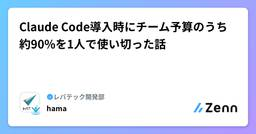
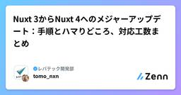
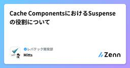
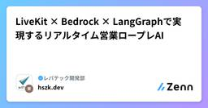
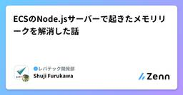
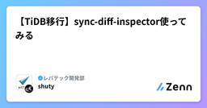
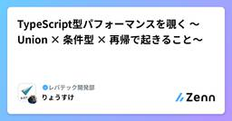

レバテック開発部のフィード
https://zenn.dev/p/levtech
レバテック開発部の公式テックブログです！
フィード

Claude Code導入時にチーム予算のうち約90%を1人で使い切った話
レバテック開発部のフィード
この記事は レバテック開発部 Advent Calendar 2025 13日目の記事です。 はじめにはじめまして。2025年10月にレバテック開発部にジョインした hama です。みなさんは Claude Code を活用していますか？リリースからもうすぐ1年、開発体験を大きく変えるツールとして定着しつつありますね。私は2025年5月のAnthropicの発表直後から個人で Max Plan を契約して、8月頃まで使っていました。（8月ごろに発生した大規模なバグの時に離れたユーザーの1人でした。）この度、11月中旬から Claude Code がチーム開発で本格導入されるこ...
12時間前

Nuxt 3からNuxt 4へのメジャーアップデート：手順とハマりどころ、対応工数まとめ
レバテック開発部のフィード
はじめにこの記事は レバテック開発部 Advent Calendar 2025 12日目の記事です。この記事では、Nuxt 3からNuxt 4へメジャーアップデートした際の手順と感想を紹介します！（最近はNext.jsの記事が多く、Nuxtの人達はどこにいったんだろう...とふと思うことがありますw）まだまだサポート期限まで余裕があると思いきや、EOL（2026-01-31）が意外と迫っていたため、早めの対応を行いました。（すぐにNuxt5も来そうで怖い.... この記事でわかることNuxt 4に上げた際の具体的な「ハマりどころ」手動でのディレクトリ移行手順実際の...
2日前

Cache ComponentsにおけるSuspenseの役割について 1
1
レバテック開発部のフィード
この記事は レバテック開発部 Advent Calendar 2025 11日目の記事です。 はじめに先日、Next.js 16がリリースされました。様々な改善が見られる中、特に注目されているのはやはりCache Componentsでしょう。本記事では、Cache Components有効化にともなってSuspenseの役割がどう変わるのか、どのようにSuspenseを配置すべきかについてまとめていこうと思います。 Cache Componentsって何？まずはCache Componentsの概要と主な機能について簡単に説明します。Cache Componentsは、...
3日前

LiveKit × Bedrock × LangGraphで実現するリアルタイム営業ロープレAI
レバテック開発部のフィード
はじめにこの記事は レバテック開発部 Advent Calendar 2025 7日目の記事です。前回の記事に続き、全然SREっぽいことを投稿しないSREチームの鈴木です。最近、Voice AI（音声対話AI） の進化が止まりません。OpenAIのAdvanced Voice ModeやGoogleのGemini Liveなど、人間と自然に会話できるAIが急速に身近になってきました。こうした技術的背景の中、私たちレバテックでは、社内の人材育成を加速させる施策として 「営業ロールプレイングのAI化」 の技術検証に取り組んでいます。 そもそも「営業ロープレ」とは？営業ロープ...
3日前

ECSのNode.jsサーバーで起きたメモリリークを解消した話 1
レバテック開発部のフィード
こんにちは、レバテック開発部の古川と申します。この記事は レバテック開発部 Advent Calendar 2025 10日目の記事です。新卒2年目で、入社して初めてアドベントカレンダーに参加させていただきます。拙い筆ではありますがご容赦ください。 ECSタスクでOutOfMemoryErrorが発生先日、ECSにホスティングしたNode.jsのWebサーバーがOutOfMemoryError（以下OOM）で異常終了してしまいました。メモリリークの可能性も含めて原因を調査したため、その手順や顛末についてまとめます。 ヒープメモリとは調査する前に、まずヒープメモリについ...
4日前

【TiDB移行】sync-diff-inspector使ってみる
レバテック開発部のフィード
この記事は レバテック開発部 Advent Calendar 2025 9日目の記事です。 これはsync-diff-inspectorを使ってMySQL互換のデータベース間のデータ差分チェックを最低限の構成でやってみます。 sync-diff-inspectorって？MySQLプロトコルを使用してデータベースに保存されたデータを比較するためのツールです。MySQL〜TiDB間といったデータの差分を比較できます。また、少量のデータに不整合がある場合の修復用のSQLを自動生成する機能も備わっています。 きっかけ全社的にAWS RDSからTiDBへ移行を行なっておりデータレ...
5日前

TypeScript型パフォーマンスを覗く 〜Union × 条件型 × 再帰で起きること〜
レバテック開発部のフィード
この記事は レバテック開発部 Advent Calendar 2025 8日目の記事です。 1. はじめにTypeScriptでは、tsserverというプロセスが裏側で動いていて、コードを編集するたびに変更されたファイルやその依存関係部分を型チェックします。TypeScriptで開発するようになってから、エディタの補完が一瞬止まったり、型チェックが返ってこなくなる場面が何度かありました。特にモブプロ中に大きめのファイルをいくつも開いていると、tsserverが固まったように見えることがあり、最初は「VSCodeのタブの開きすぎ、アプリの開きすぎかな」くらいに考えていました。と...
6日前

だいたい同じだけど一部が異なるデータを持つデータ構造について4つのパターン分類してみた 5
レバテック開発部のフィード
この記事は レバテック開発部 Advent Calendar 2025 6日目の記事です。 はじめにアプリケーション開発において、だいたい同じだけど、一部が異なるデータを管理しなくてはならないときがあります。例えば、以下のような要件に遭遇することがあります。サイト全体の設定を元に、プロジェクトごとに一部だけ変更した設定ファイル。共通の契約書のテンプレートデータを元に、顧客ごとに特約を書き加えた契約書。これらはすべて、元となるテンプレートデータと、それを活用しつつ改変されたインスタンスデータの関係にあります。本記事では、この課題を解決するためのデータ構造を4つのパターン...
8日前

チーム内でCTFをやってみた
レバテック開発部のフィード
この記事は レバテック開発部 Advent Calendar 2025 5日目の記事です。レバテック開発部の松浪です。先日、個人戦形式のCTFを所属するチーム内で実施してみました。この記事では、なぜCTFをやってみたのか？CTFをやってみてどうだったか？を振り返りも兼ねて記載します。もし、CTFを社内でやってみたいなぁ、、とお考えの方がいたら、少しでも参考になれば幸いです。 なぜCTFをやってみたのか？セキュリティに関わる身として、単純にCTFに興味・関心があったから...と言うのもあるのですが、セキュリティ関連の勉強会にてCTFを体験し、そこで使用されていたC...
9日前
Laravel Middlewareの役割と使い方
レバテック開発部のフィード
📝 はじめにこんにちは、レバテック開発部のみっつんです。この記事は レバテック開発部 Advent Calendar 2025 4日目の記事です。業務でMiddleware周りを調べるきっかけがあり、この時の学びをまとめました。初学者やMiddlewareを使っているものの、その仕組みがよくわからないという方のお役に立てれば幸いです。この記事でわかることLaravelにおけるMiddlewareの役割Middlewareの使い方実際の処理フロー 対象読者Middlewareって何？という方Middleware使っているけど、役割や裏側の処理が気になる方...
10日前
コードに魂を込めるということ
レバテック開発部のフィード
※この記事は レバテック開発部 Advent Calendar 2025 3日目の記事です。 導入クリスマスも近いので、最近感じたことを少し書いてみる。（アドベントカレンダーっぽくない記事になりそう、すみません）ここ最近PRレビューをしていると、「仕様を満たしてない」「コーディング規約に沿ってない」みたいな指摘があって、思った以上に時間を要するケースが増えてきた。理由が気になってあるメンバーとペアプロをしてみたところ、AIエージェントに対して指示を送り続ける、いわゆる VibeCoding のスタイルで実装している姿を目にした。AIを活用すること自体は良いことだし、生産性向...
11日前
チームリーダーとして学んだ対話の大切さ
レバテック開発部のフィード
こんにちは、レバテック開発部の山川です。この記事は レバテック開発部 Advent Calendar 2025 2日目の記事です。 はじめに私がレバテックに入ってからそろそろ2年が経ちます。入社時の期待「開発組織の技術力向上に取り組んでほしい」に応えたいと思いつつ、個人的にはリーダーシップなどのスキルも伸ばしていけたらいいなとも思い、入社を決めました。入社3ヶ月後には、開発チームのリーダーをやることになり、いろいろと失敗しながらも何とか続けられています。この記事では、私がチームリーダーとして学んだチームメンバーとの対話の大切さを紹介します。 対話する大切さチームリーダーの...
12日前
ディレクトリ構造で実行範囲を最適化する 無理のないVRTの運用
レバテック開発部のフィード
はじめにバッジください。うきおです。レバテック開発部 Advent Calendar 2025トップバッターになりました。本当はもっと色んな層に刺さる記事を書けるとアドベントカレンダーの1人目としては良かったのかなと思いつつ、フロントエンドをちょこちょこ触っているのでフロントエンド関連の記事に落ち着いてしまいました。本記事では、私たちのチームでVRT（Visual Regression Testing）を導入する際に、ディレクトリ構造に基づいて実行範囲を最適化する仕組みを実装した話をまとめます。 チームの開発スタイルと解決したい課題本記事を読み進める上で知っておいた方が...
13日前
TiDBのMySQL互換モード（AUTO_ID_CACHE=1）切り替えをこうやりました
レバテック開発部のフィード
これはなにこんにちはレバテック開発部のもりたです。最近、AWS AuroraからTiDBへの移行プロジェクトの担当をしています。その中でTiDBをMySQL互換モードに切り替える機会があったので、その作業手順をメモしておきたいと思います。なおMySQL互換モードについての解説は以下の公式ページを参照ください。（簡単にいうと、TiDBはAUTO INCREMENTのIDが単調増分しないのですが、MySQL互換モードにするとMySQLみたいに増えてくれるやつです）https://docs.pingcap.com/ja/tidb/stable/auto-increment/#mys...
16日前
LEFT JOINの論理削除はWHERE句でしぼるな
レバテック開発部のフィード
これはなにこんにちは、レバテック開発部のもりたです。論理削除、皆さんは採用していますか？ わたしが普段開発するシステムでは論理削除を採用しているものもあるのですが、今回はその論理削除の気を付けるべき点として「子テーブルの論理削除されたレコードの絞り込みをWHERE句でしてはならない」という問題について解説します。慣習的に起こりにくいミスなんですが、案外ダメなことを知らない人もいると思うので、ご紹介です。 どうすればいいか？こうじゃなくて...SELECT *FROM parents LEFT JOIN children ON pa...
23日前
ドキュメント検索MCPサーバを作ってみた【MCP+OpenSearch+AWS】
レバテック開発部のフィード
はじめにこんにちは、SREチームの鈴木です。SREチームでは、開発リソースの20%を目安にメインプロジェクト以外の「自チームの運用課題の解消」に取り組むことができます。現在、AWS・New Relic・TiDB など開発部で利用する複数のSaaSを管理しており、問い合わせ対応にかかる工数が課題になっています。これを解決するため、各サービスの公式ドキュメントを参照して正確な回答を返す MCP サーバーを作って、実験的に導入してみました！今後は費用対効果を計測しつつ、効果が見込める場合には改善点を洗い出してブラッシュアップしていきたいと思います。本記事では、OpenSearch...
1ヶ月前
ユニットテストがしやすいコード構成について過去を振り返って考えてみた
レバテック開発部のフィード
はじめにインテグレーションテスト主体でテストを書いていく場合、テスト実行時間が長い問題が出てきた。（インスタンスをたくさん並べてパラレル実行にするとかやりようはあると思う）解決するためには出来る限りユニットテストに寄せた方が良いが、どういったコード構成ならユニットテストに寄せやすいのか？考えた。 今あるアーキテクチャから選べばいいじゃんという話もあるが。。。既存アーキテクチャだとなんかしっくりこないのでしっくりくるのを考えてみた。全部に当てはまる正解はないので、自分の関わってきたシステムを振り返り、それらを踏まえて考えてみる。実際に本番稼働していたシステムを元に考える...
2ヶ月前
[Laravel] 他システムとのデッドロック発生時の対応メモ
レバテック開発部のフィード
自システムvs他システムのデッドロック対応メモ 概要他システム→自システムへの更新で、特定テーブルのデッドロックが発生しました。突然発生し始めたように見えて、発生直後は焦りました。 直接原因自システムでモデルが作成されたのち、以下の状態になったためデッドロックが起きてしまいました。TRX1:モデルA作成 → モデルイベントでモデルB作成 → モデルイベントでモデルAを更新TRX2:モデルAを他システムへ連携 → 他システムで一意なIDを発行 → モデルAを更新同期処理と非同期処理が被ってしまったパターンです。 復旧作業 データリペア自システムと他システ...
2ヶ月前
見積もり3200%超過プロジェクトから学ぶ、スケジュール遅延要因３選
レバテック開発部のフィード
0. これはなにこんにちは。レバテック開発部のもりたです。じつはこの一年ほど、あるプロジェクトの開発側リーダーをしていたんですが、スケジュールを大きく遅延させてしまいました（2週間で終わる予定が1年を超えた）。スケジュール遅延、嫌ですよねえ...。その嫌な気持ちをいったん傍に置いて、遅延が起きる要因を分解してみると、遅延要因は「もともと必要な工期を過小に見積もった」ことと「失敗で不必要に工期をかけてしまった」ことのふたつに分けられると思います。特に前者の過小見積もりは場合によってはとんでもなく見当違いな見積もりを出してしまいがちです。今回はもりたの実体験をもとに、工期を過小...
2ヶ月前
Laravelのマイグレーション機能をちゃんと知る
レバテック開発部のフィード
これはなにこんにちは、レバテック開発部のもりたです。今回はLaravelのマイグレーション機能についてまとめます。これはアプリケーションコード上でデータベースのテーブル修正やカラム修正を管理する機能です。もりたは仕事上でもLaravelを使うんですが、マイグレーションについてちゃんと理解してなかったため、今回まとめてみました。構成 構成今回の構成は以下の通りです。概要マイグレーションの流れEloquentとマイグレーションの関係マイグレーションファイルの作成方法マイグレーションファイルの書き方マイグレーションの実行それでは参りましょう。 マ...
2ヶ月前